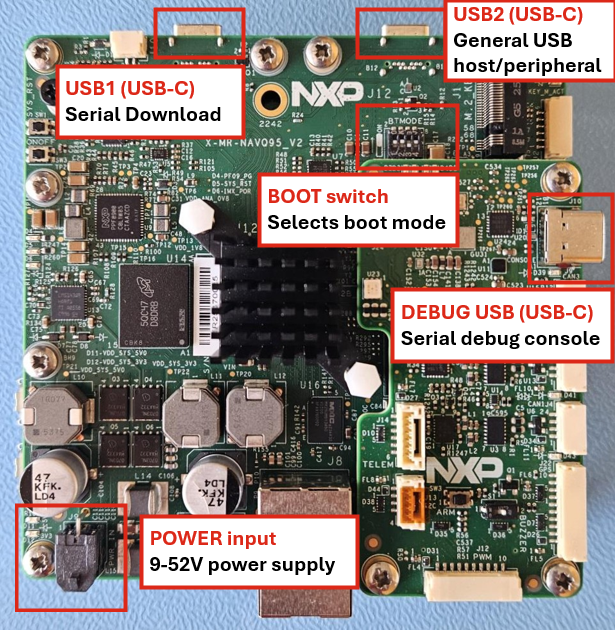
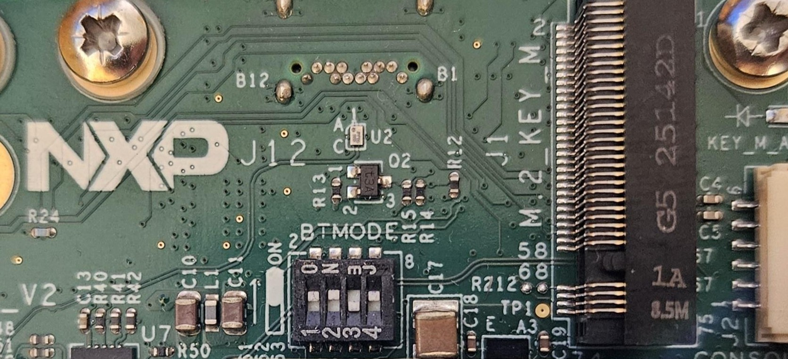

MR-NavQ95-KIT Board Overview¶
This page provides a quick reference for the key hardware interfaces on the MR-NavQ95-KIT board, including boot switches, USB ports, and power input. This information is particularly useful when flashing firmware or bringing up the board for the first time.


MR-NavQ95-KIT Board Overview
Boot Switch (SW2)¶
The boot mode is selected using DIP switch SW2, located near the M.2_KEY_M PCIe connector (J1) on the top of the board. Set the switches before powering on the board.
Important: When an ARA module is connected to the M.2_KEY_M PCIe connector (J1), it will physically cover SW2. Always set the desired boot mode before attaching the ARA module.
The BOOT_MODE[3:0] bits map to switches SW2[4:1]:
BOOT_MODE[3:0] |
SW2[1] |
SW2[2] |
SW2[3] |
SW2[4] |
Boot Device |
|---|---|---|---|---|---|
|
ON |
OFF |
OFF |
ON |
Serial Downloader via USB1 (J13) |
|
OFF |
ON |
OFF |
ON |
eMMC |
|
ON |
ON |
OFF |
ON |
SD Card |
|
OFF |
OFF |
ON |
ON |
Octal Flash (NOR) |


SW2 boot mode switch location on the MR-NavQ95 main board, near the J1 M.2_KEY_M PCIe connector.
USB Interfaces¶
Connector |
Label |
Type |
Function |
|---|---|---|---|
USB1 |
J13 |
USB Type-C |
Serial Download port — used by UUU to write the Linux image to eMMC or SD card. |
DEBUG USB |
J10 |
USB Type-C |
Exposes the serial debug console for both the Cortex-A Linux and Cortex-M (RTOS) domains. Note: J10 is located on the IO connector board. |
To access the debug console, connect the DEBUG USB port to your host machine and open the corresponding serial port (e.g.,
/dev/ttyUSB0on Linux) at 115200 baud, 8N1.
Power¶
The MR-NavQ95 is powered via the J9 power input connector, accepting a wide-range DC supply.
Input |
Specification |
|---|---|
J9 |
9 – 52 V DC |
Warning: Ensure a stable power supply is connected before flashing or booting. The USB ports do not power the board.
Related Guides¶
Cortex-A Linux image:
Building the Yocto Image from Source
Flashing the Cortex-A Linux Image
Cortex-M RTOS firmware:
Flashing the Cortex-M RTOS Firmware
Overview:
Flashing the MR-NavQ95